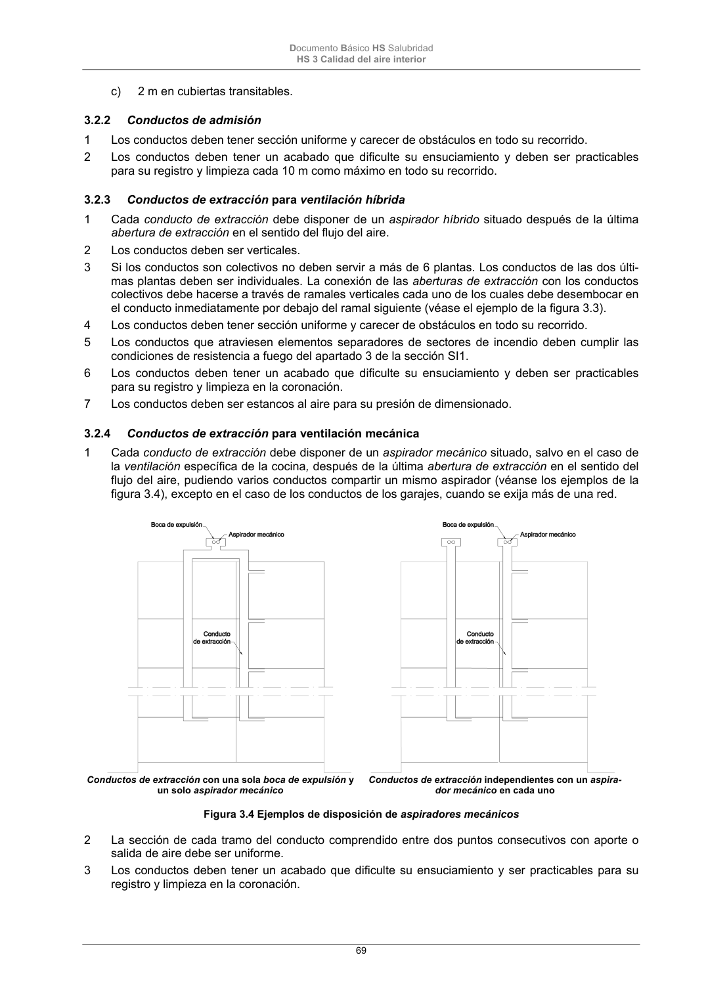

DB-HS · 3.2 Condiciones particulares de los elementos · versión 2022-06-14 · capa oficial
Formatos: JSON compacto · Markdown · PDF fuente
Ámbito del documento · texto del ámbito · documento y tablas
ID técnico a0148 · PDF pág. 68-70 · jerarquía no validada por persona · contrastado con el literal de la página 68 (candidato tipográfico); no validado por persona · padre: a0139
3.2 Condiciones particulares de los elementos 3.2.1 Aberturas y bocas de ventilación 1 En ausencia de norma urbanística que regule sus dimensiones, los espacios exteriores y los patios con los que comuniquen di- rectamente los locales mediante aberturas de admisión, abertu- rasmixtas o bocas de toma deben permitir que en su planta se pueda inscribir un círculo cuyo diámetro sea igual a un tercio de la altura del cerramiento más bajo de los que lo delimitan y no menor que 3 m. 2 Pueden utilizarse como abertura de paso un aireador o la holgu- ra existente entre las hojas de las puertas y el suelo. 3 Las aberturas de ventilación en contacto con el exterior deben disponerse de tal forma que se evite la entrada de agua de lluvia o estar dotadas de elementos adecuados para el mismo fin. 4 Las bocas de expulsión deben situarse en la cubierta del edificio separadas 3 m como mínimo, de cualquier elemento de entrada de ventilación (boca de toma, abertura de admisión, puerta exte- rior y ventana) y de los espacios donde pueda haber personas de forma habitual, tales como terrazas, galerías, miradores, bal- cones, etc. 5 En el caso de ventilación híbrida, la boca de expulsión debe ubicarse en la cubierta del edificio a una altura sobre ella de 1 m como mínimo y debe superar las siguientes alturas en función de su emplazamiento (véanse los ejemplos de la figura 3.4): a) la altura de cualquier obstáculo que esté a una distancia comprendida entre 2 y 10 m; b) 1,3 veces la altura de cualquier obstáculo que esté a una dis- tancia menor o igual que 2 m; Figura 3.3 Ejemplo de conducto de extracción para ventilación híbrida con conducto colectivo Documento Básico HS Salubridad HS 3 Calidad del aire interior 69 c) 2 m en cubiertas transitables. 3.2.2 Conductos de admisión 1 Los conductos deben tener sección uniforme y carecer de obstáculos en todo su recorrido. 2 Los conductos deben tener un acabado que dificulte su ensuciamiento y deben ser practicables para su registro y limpieza cada 10 m como máximo en todo su recorrido. 3.2.3 Conductos de extracción para ventilación híbrida 1 Cada conducto de extracción debe disponer de un aspirador híbrido situado después de la última abertura de extracción en el sentido del flujo del aire. 2 Los conductos deben ser verticales. 3 Si los conductos son colectivos no deben servir a más de 6 plantas. Los conductos de las dos últi- mas plantas deben ser individuales. La conexión de las aberturas de extracción con los conductos colectivos debe hacerse a través de ramales verticales cada uno de los cuales debe desembocar en el conducto inmediatamente por debajo del ramal siguiente (véase el ejemplo de la figura 3.3). 4 Los conductos deben tener sección uniforme y carecer de obstáculos en todo su recorrido. 5 Los conductos que atraviesen elementos separadores de sectores de incendio deben cumplir las condiciones de resistencia a fuego del apartado 3 de la sección SI1. 6 Los conductos deben tener un acabado que dificulte su ensuciamiento y deben ser practicables para su registro y limpieza en la coronación. 7 Los conductos deben ser estancos al aire para su presión de dimensionado. 3.2.4 Conductos de extracción para ventilación mecánica 1 Cada conducto de extracción debe disponer de un aspirador mecánico situado, salvo en el caso de la ventilación específica de la cocina, después de la última abertura de extracción en el sentido del flujo del aire, pudiendo varios conductoscompartir un mismo aspirador(véanse los ejemplos de la figura 3.4), excepto en el caso de los conductos de los garajes, cuando se exija más de una red. Conductos de extracción con una sola boca de expulsión y un solo aspirador mecánico Conductos de extracción independientes con un aspira- dor mecánico en cada uno Figura 3.4 Ejemplos de disposición de aspiradores mecánicos 2 La sección de cada tramo del conducto comprendido entre dos puntos consecutivos con aporte o salida de aire debe ser uniforme. 3 Los conductos deben tener un acabado que dificulte su ensuciamiento y ser practicables para su registro y limpieza en la coronación. Documento Básico HS Salubridad HS 3 Calidad del aire interior 70 4 Cuando se prevea que en las paredes de los conductos pueda alcanzarse la temperatura de rocío éstos deben aislarse térmicamente de tal forma que se evite que se produzcan condensaciones. 5 Los conductos que atraviesen elementos separadores de sectores de incendio deben cumplir las condiciones de resistencia a fuego del apartado 3 de la sección SI1. 6 Los conductos deben ser estancos al aire para su presión de dimensionado. 7 Cuando el conducto para la ventilación específica adicional de las cocinas sea colectivo, cada ex- tractor debe conectarse al mismo mediante un ramal que debe desembocar en el conducto de ex- tracción inmediatamente por debajo del ramal siguiente (véanse los ejemplos de la figura 3.5). Figura 3.5 Ejemplos de conductos para la ventilación específica adicional de las cocinas 3.2.5 Aspiradores híbridos, aspiradores mecánicos y extractores 1 Los aspiradores mecánicos y los aspiradores híbridos deben disponerse en un lugar accesible para realizar su limpieza. 2 Previo a los extractores de las cocinas debe disponerse un filtro de grasas y aceites dotado de un dispositivo que indique cuando debe reemplazarse o limpiarse dicho filtro. 3 Debe disponerse un sistema automático que actúe de tal forma que todos los aspiradores híbridos y mecánicos de cada vivienda funcionen simultáneamente o adoptar cualquier otra solución que impi- da la inversión del desplazamiento del aire en todos los puntos. 3.2.6 Ventanas y puertas exteriores 1 Las ventanas y puertas exteriores que se dispongan para la ventilación natural complementaria deben estar en contacto con un espacio que tenga las mismas características que el exigido para las aberturas de admisión. 4


PDF fuente redistribuible: copia fiel enlazada en esta página (SHA256 verificado).